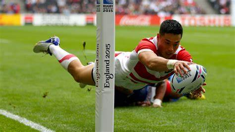
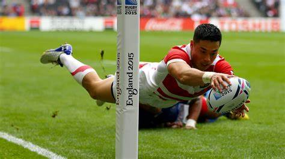

Táticas do esporte
Traduzir a página para inglês.
- Os jogadores tem funções e os times vão ficar mais ou menos igualmente em 2 linhas,como mostrar a imagem mera ilustrativa, tentando deixar o oponente com menos espaços possivéis para avanços.

- No jogo acontecem por vezes mudanças nos deslocamentos dos jogadores adversários, lances que você pode fingir passar uma bola e seguir correndo para enganar a defesa, bola chutada no meio de jogadores adversários para tentar criar alguma confusão de quem vai na bola, algumas jogadas ensaiadas a partir dos laterais, as decisões de ir para os postes em certos momentos do jogo, fazer um jogo mais simples de contato na qual quem está com a bola vai para o choque com o adversário e formado o ruck já se tira a bola e recomeça o jogo.

 

- A disposição tática das equipes sempre é, pilares, hooker, pontas segundas linhas, number 8, Scrum Half, asas, fullback, primeiro e segundos centros, no calor do jogo quando atacando podemos ter mudanças de posições, mas no geral a formação táticas dos times não muda, a atitude dos jogadores em campo é o que faz a diferença, por exemplo, um jogador chuta a bola além dos 22 metros, a bola quica, sai e o adversário ganha um line out perto de sua área de in goal, eles batem o lateral e perdem a bola, seu time faz o try e acerta a conversão, 7 pontos ganho, num jogo empatado faltando 5 minutos para o final e você tem uma falta a seu favor, seu chutador pede para ir aos postes e acerta, seu time acerta, seu time fica com vantagem de 3 pontos.

Volte ao início